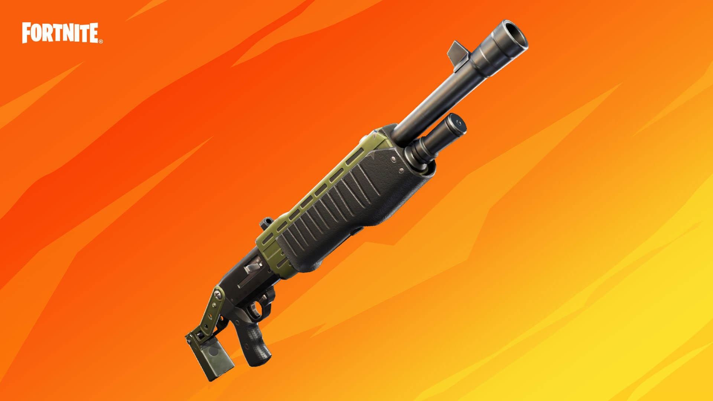
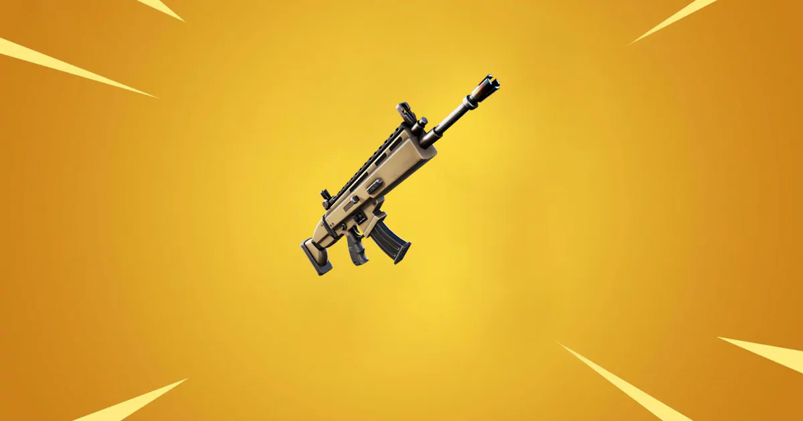
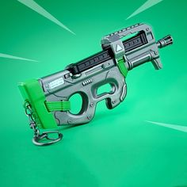
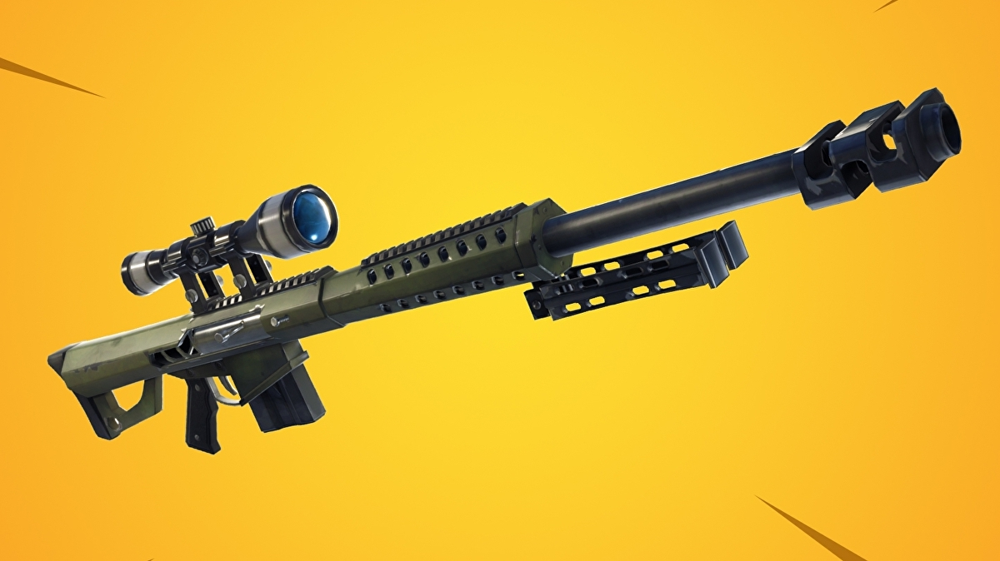

 pamp shotgun
Pump Shotgun
Disambig.png This article is about the Battle Royale shotgun. For the Save The World shotgun subtype, see Pump-Action Shotguns. For the Common-rarity Save The World pump-action shotgun, see Pump-action Shotgun.
PUMP SHOTGUN
Pump shotgun.png
Description
Shotgun: Pump-Action. Deals high damage at a moderate fire rate. Short range and limited magazine size.
Details
Category Battle Royale Weapons
History
Introduced
Patch 1.6
Patch 6.31 (Epic and Legendary)
Last Adjustment Patch 16.00
Vaulted
Patch 9.00
Patch 13.00
Patch 15.00
Pump Shotgun is a Shotgun in Battle Royale. It is available in Common, Uncommon,Rare, Epic and Legendary . It uses Shells as ammo, has a headshot multiplier of x2 and fires ten pellets in a spread to deal damage.
Firing from a limited magazine, the Pump Shotgun outputs immense damage up close, but very slowly. It is completely lacking in ranged combat ability, because of a wider spread of the bullets, and does not constantly shoot when the trigger is held down. Formally in Chapter 1, the Common, Uncommon and Rare variants of the Pump Shotgun was only obtainable from Floor Loot while the Epic and Legendary variants were available from Chests, Supply Drops and Floor Loot. During Chapter 2, all variants of the Pump Shotgun can be found from floor loot and chests. The Rare variant also dropped from Loot Stars and Supply Drones until Patch 11.00 (Chapter 2 Launch).
The Pump Shotgun has a slightly wider spread than the Charge Shotgun which needs to charge to deal huge damage and was slightly faster than the Pump Shotgun, yet the Pump Shotgun fires and reloads slower and but has a bigger magazine size.
 scar rifle
The Assault Rifle can be created from upgrading a Makeshift Rifle using 2/4/6 Mechanical Parts depending on rarity. As such, only an Uncommon, Rare or Epic Assault Rifle can be craftedThe Assault Rifle is the best all round weapon the game, being good at short and long range combat, and excelling at mid range. It should be your go to weapon if you are in a position to swap another weapon out.
Along longer sight-lines, firing in bursts or tap-firing single shots can improve your overall effectiveness, as consistent fire can make the weapon's degree of spread severe, especially when paired with strafing
The Assault Rifle has a high DPS and is good at breaking enemy structures fast.
Crouching with this gun resets its first shot accuracy faster, allowing for more accurate shots. Crouching also reduces its hipfire spread and spread in general.
It is not wise to challenge players wielding Sniper Rifles, as they can instantly eliminate you in a single well-placed shot while you're attempting to whittle away at their health one shot at a time. Instead, place some structures between you and them and attempt to get closer with a few ramps.
It is strong and reliable at long range, medium range, and especially close range!
smg
The SMG was unvaulted on the initial patch of Chapter 2 Season 1 with the additions of the Epic and Legendary variants (an adjusted Compact SMG). It replaced the Suppressed SMG and the Tactical SMG. The Epic and Legendary variants were then vaulted on the initial patch of Chapter 2 Season 2Submachine Gun (Battle Royale)
Disambig.png This article is about the Submachine Gun. For the "Submachine Gun" from Chapter 1, Seasons 1 and 2, see Machine Pistol (Battle Royale).
SUBMACHINE GUN
Submachine Gun battle royale gif.gif
Description
Pistol: Machine Pistol. Fires at a very high rate, dealing great damage while consuming a lot of ammo. Good for run-and-gun combat, and accurate enough to fight at mid range when fired in short bursts.
Details
Category Battle Royale Weapons
History
Introduced 5.0 Content Update
Last Adjustment Patch 16.00
Vaulted
Patch 7.30
Patch 12.00 Epic and Legendary
Patch 14.00
The Submachine Gun (most commonly called both the SMG and P90 by the community) is an SMG in Battle Royale. It is available in Common, Uncommon, Rare , Epic and Legendary variants and has a headshot multiplier of 1.75x (formally 2.0x). The weapon deals 28, 29, 31, 33 and 35 damage to the head (formally 32, 34, 36, 38, 40 damage to the head). The Submachine Gun Common, Uncommon, Rare was introduced in the 5.0 content update, replacing the Tactical Submachine Gun. The Epic and Legendary variants were added in patch 11.00 Chapter 2 Season 1.
Even though the gun has a totally different name in the files, Epic considers the Epic & Legendary Submachine Gun as the Compact SMG.
Patch 7.30, the SMG got vaulted, making it only available exclusively in Creative, Playground and in Unvaulted LTM. It was vaulted for for the Suppressed SMG to return.
The SMG was unvaulted on the initial patch of Chapter 2 Season 1 with the additions of the Epic and Legendary variants (an adjusted Compact SMG). It replaced the Suppressed SMG and the Tactical SMG. The Epic and Legendary variants were then vaulted on the initial patch of Chapter 2 Season 2 due to being overpowered.
In Chapter 2, Season 3, the Epic & Legendary variants of the gun had several adjustments :
In Patch 13.00, the Epic and Legendary Submachine Guns were unvaulted. But sometime after Patch 13.00, a hotfix was deployed and they got nerfed to fit the Compact SMG stats that was also unvaulted. The Compact SMG and the Epic and Legendary SMG were the same weapon, just different name and texture, this was most likely a developer mistake. The fire rate was decreased from (12 > 10), the magazine size got increased from (30 > 40) and the reload time was increased (1.8 > 3.1, 1.7 > 3.0). Thus, it made the Uncommon and Rare variants of the Submachine Guns faster than the Epic and Legendary variants.
In Patch 13.20, Common to Rare Submachine Guns' firerate were nerfed from 12 to 10, matching the one used in the Epic and Legendary variants. All variants of this weapon were also nerfed by 1 damage, with the Epic and Legendary variants' magazine size decreased from 40 to 35. As a result, the weapon became weaker than the Machine Pistol. It's other version, the Compact SMG was vaulted and cannot be dropped from Henchmen anymore, which means Henchmen now drop Epic Submachine Guns.

dramgun
It was formerly available in Uncommon and Rare rarities. In Chapter 2 Season 2, a new Mythic variant was introduced, known as Midas' Drum Gun. In Chapter 2 Season 3, it is now known as Jules' Drum Gun, also Mythic. The Midas' Drum Gun and Jules' Drum Gun have different stats, this was most likely to balance the Drum Gun out, as Midas’ Drum Gun was very overpowered.Drum Gun
Safe icon.png
This article discusses content that has been put in the Vault.
This item has been made unavailable in order to adjust the game balance. It may return in the future.
DRUM GUN
Drum gun icon.png
Details
Category Battle Royale Weapons
History
Introduced 4.5 Content Update
Last Adjustment Patch 14.40
Vaulted
5.40 Content Update
Patch 10.20
Patch 13.00 (Midas' Drum Gun)
Patch 14.00 (Jules' Drum Gun)
Patch 14.50 (Shadow Midas' Drum Gun)
The Drum Gun was an Assault Rifle in Battle Royale (though before Season 9, it was an SMG). It uses Medium Bullets and all variants having a headshot multiplier of x1.5 (dealing 31/33/36/37 damage to the head).
It was formerly available in Uncommon and Rare rarities. In Chapter 2 Season 2, a new Mythic variant was introduced, known as Midas' Drum Gun. In Chapter 2 Season 3, it is now known as Jules' Drum Gun, also Mythic. The Midas' Drum Gun and Jules' Drum Gun have different stats, this was most likely to balance the Drum Gun out, as Midas’ Drum Gun was very overpowered.
The Drum Gun does not have first shot accuracy, but it can be hip-fired with while walking with decent accuracy at a fast fire rate.
The Drum Gun was vaulted in the 5.40 Content Update due to the weapon being too overpowered (having 50 ammo in a magazine & high damage), but was unvaulted during the Unvaulting Event, on May 4th, 2019, in Patch 8.51 & during the Winterfest event on December 19, 2019 and January 2, 2020 respectively. Following the Double Barrel Shotgun and Flint-Knock Pistol, this was the second and 16th item to be unvaulted for the event.
During the Unvaulting event on Patch 8.51, players chose this gun to be unvaulted from the Grappler, Infinity Blade, X-4 Stormwings (Plane), Tactical SMG & Bouncers. However, the Drum Gun was vaulted again in the Patch 10.20 making it exclusively available in Creative again.
The Drum Gun (formerly an SMG) was once again unvaulted in the 12.00 Patch, this time as a Mythic reward for defeating Midas at The Agency. Only
 sniper
Sniper Rifles fill the role of a long range weapon and are often used to attack opponents at ranges where un-scoped weapons cannot easily see them. All Sniper Rifles have a projectile bullet, meaning that the bullet does not instantly hit where the player aims. The projectile is affected by gravity, and different sniper rifles fire different speed projectiles. Sniper Rifles do not have fall-off damage, meaning they deal the same damage up close as they do at any range, allowing for most of them knock a player at any range with a single well placed shot.Unlike other weapons, players need to account for bullet drop when using Sniper Rifles. The greater the range of the shot, the more the bullet drops on the way to the target. You should also account for the speed a player is moving alongside range. If a player is far away and moving left for example, the player should aim above the target and further left, to compensate for the bullet speed and drop.
Trivia
The Zapatron was a weapon included on the launch of Battle Royale. It was a hitscan laser type weapon and there is only one clip of its existence.. It was removed shortly after. It is also the only weapon in Battle Royale outside of an LTM to use Energy Ammo - Icon - Fortnite.png Energy Ammo.
All remaining Sniper Rifles were vaulted in Update v16.00.
Killing a player without aiming down sights with any of these weapons shows a 'NO SCOPED' message in the kill feed. This is in reference to the concept of 'no-scoping' popularized by the Call of Duty franchise.
Categories:
Item Classes (Battle Royale)Sniper Rifles (Battle Royale)Weapons (Battle Royale)
Community content is available under CC-BY-SA unless otherwise noted.
Recent Wiki Activity
Item Shop
DudeTheNinja • 5 hours ago
Rocket
UziFX • 5 hours ago
Saucer
DudeTheNinja • 5 hours ago
Patch Notes
MTOnline69 • 5 hours ago
Item Shop History/April 2nd 2020
MTOnline69 • 5 hours ago
Popular Pages